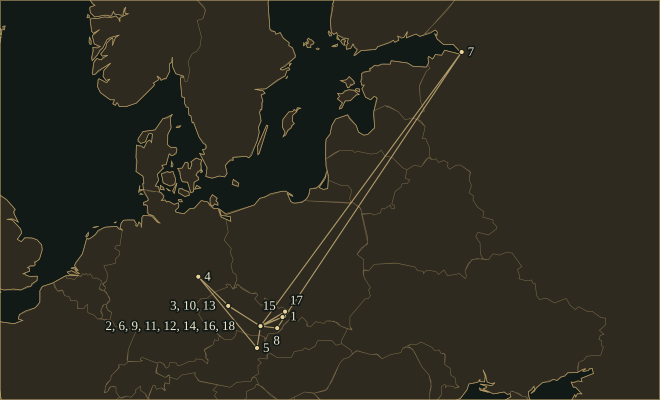

LeošJanáček
A Moravian composer who studied the inflections of speech and built operas from short cells, repeated figures and abrupt changes of perspective.
- Trained
- Old Brno monastery choir; Prague Organ School; further study in Leipzig and Vienna
- Posts
- Teacher and choral conductor in Brno; founder and director of the Brno Organ School, 1881–1919
- Sources
- Moravian folk song · Czech speech · Russian literature · Gabriela Preissová, Rudolf Těsnohlídek and Karel Čapek
- Output
- Nine operas; choral and orchestral works; two string quartets; piano music; folk-song collections
37.1Life
Janáček was born in Hukvaldy in 1854, into a Moravian schoolmaster’s family. At eleven he became a chorister at the Augustinian monastery in Old Brno, where Pavel Křížkovský supplied rigorous musical training. His education continued at the Prague Organ School and, more briefly, in Leipzig and Vienna. He returned to Brno to build his career. Teaching, conducting and organising institutions occupied much of his adult life: he founded the Brno Organ School in 1881 and directed it until 1919. The composer now associated with the modernist opera house spent decades preparing other people’s practical musical education.
He married Zdeňka Schulzová in 1881. Their son Vladimír died in childhood; their daughter Olga died in 1903, aged twenty-one. The marriage endured these losses but was repeatedly strained. Friendship with Dvořák and the repertory of Czech choral societies helped shape the earlier compositions, yet Janáček’s mature manner developed slowly. He was already in his forties when the short motives, irregular phrases and repeated accompaniment figures of his later music began to replace more conventional forms. His position in musical history is therefore misleading if determined only by his birth date, a decade before Strauss.
Listening in MoraviaSong and speech
From the late 1880s he collected Moravian folk music, collaborating with the scholar František Bartoš and later using a phonograph as well as written notation. Their collections preserve songs as documents. He studied accents, repeated pitches, flexible phrase lengths and the relationship between a singer’s line and instrumental accompaniment, drawing compositional lessons from them. In Brno, Czech cultural work also had a political dimension within a city whose major institutions were heavily German-speaking. His choruses on Petr Bezruč’s poems address poverty and national oppression through difficult, concentrated writing for male voices.
From 1897 he systematically recorded the pitch contours and rhythms of speech: a passer-by, a child, a vendor, someone in distress. He also noted birds and other environmental sounds. The written staves approximate the continuous pitch changes of an actual voice. Their compositional importance lies in attention to context. The same words can acquire a different contour when spoken anxiously or indifferently; Janáček’s operatic phrases similarly make an emotional action audible through register, rhythm and repetition.
JenůfaA late public beginning
Jenůfa occupied him from 1894 to 1903. He adapted Gabriela Preissová’s play Její pastorkyňa — “Her Stepdaughter” — retaining its prose in the libretto. The Kostelnička kills Jenůfa’s baby to protect her stepdaughter from disgrace; the final act exposes the crime but ends with a difficult act of forgiveness. A repeated instrumental figure can make the mill, domestic routine or obsessive thought persist beneath the dialogue. Olga died before the opera was completed, and Janáček dedicated it to her memory. Acceptance elsewhere came slowly after the Brno premiere in 1904.
Prague’s National Theatre finally staged Jenůfa in 1916, after the conductor Karel Kovařovic made alterations. The success brought the sixty-two-year-old composer wider recognition, and Max Brod’s German translation helped it travel internationally. Modern performances must choose between Janáček’s own revisions and changes imposed by others. Meanwhile the piano sonata 1. X. 1905 had responded to the death of the worker František Pavlík during demonstrations for a Czech university in Brno. Janáček destroyed part of the sonata, but two movements survived in a pianist’s copy.
After 1917Russian books, Czech stages
In 1917 he met Kamila Stösslová at the spa of Luhačovice. She was married and thirty-seven years younger; his hundreds of letters record his passion, while her feelings remain less clear. He associated her with characters in several works and with the Second String Quartet, Intimate Letters. That association accompanied extraordinary productivity. Russian literature supplied three very different structures: Ostrovsky’s The Storm for Káťa Kabanová, Tolstoy’s The Kreutzer Sonata for the First Quartet and Dostoevsky’s prison narrative for From the House of the Dead.
Káťa Kabanová, first performed in Brno in 1921, concentrates a woman’s conflict between desire and a coercive household into three short acts. The Cunning Little Vixen, premiered there in 1924, came from Rudolf Těsnohlídek’s newspaper story with drawings by Stanislav Lolek. Human and animal scenes run beside one another, and the Forester’s final encounter with a younger frog makes recurrence literal without bringing the dead vixen back. The Makropulos Affair, after Karel Čapek and premiered in 1926, places a woman who has lived for centuries inside an apparently prosaic legal dispute.
The same year brought the Sinfonietta, whose opening and closing fanfares require an additional brass ensemble, and the Glagolitic Mass, setting the liturgy in Old Church Slavonic. Exposed tenor writing, an independent organ solo and orchestral interludes give the Mass its distinctive balance of forces. Janáček revised it after the 1927 premiere. Short repeated figures remain fundamental, but the instrumental register or harmony around them can change suddenly, making an unchanged cell mean something new.
He completed Intimate Letters in 1928 and worked on From the House of the Dead until his final summer. In the prison opera, one inmate’s story gives way to another’s, with chains incorporated into the orchestral sound. Janáček died of pneumonia in Ostrava in August 1928. The opera’s 1930 premiere used revisions by Břetislav Bakala and Osvald Chlubna, including an altered ending; later editorial work sought to recover the composer’s harder, less reconciled version. The question of which text is being performed remains essential to hearing his last opera.
37.2Places

Read all 18 place records and their sources
- Hukvaldy · 1854-07-03–1865 · born (documented)
Born into a schoolmaster’s family with six surviving siblings, baptised Leo Eugen; a gifted child of limited means.
- St Thomas’s Abbey, Brno · 1865–1872 · studied (documented)
Enrolled as a foundation ward; he sang under Pavel Křížkovský and occasionally played the organ.
- Prague Organ School · 1874–1875-07-24 · studied (documented)
Expelled for criticising Skuherský’s Gregorian mass, then readmitted; he graduated best in his class on 24 July 1875.
- Leipzig Conservatory · 1879-10–1880-02 · studied (documented)
Dissatisfied with his teachers, and denied a place with Saint-Saëns in Paris, he moved on to Vienna.
- Vienna Conservatory · 1880-04–1880-06 · studied (documented)
Studied composition with Franz Krenn; he left in June, disappointed despite Krenn’s complimentary report.
- Brno · 1881-07-13–1928-08 · lived (documented)
Married his pupil Zdenka Schulzová; he founded and directed the organ school from 1881, later the Brno Conservatory.
- Saint Petersburg · 1902 · travelled (documented)
One of two visits to Russia that year; he took his daughter Olga to study Russian.
- Luhačovice spa · 1904 · travelled (inferred)
After Prague refused <i>Jenůfa</i>, he went to recover; he met Kamila Urválková, whose love story inspired <i>Osud</i>.
- National Theatre, Brno · 1904-01-21 · premiere (documented)
Premiere of <i>Jenůfa</i>, dedicated to his late daughter Olga; Prague refused it for twelve years. Jenůfa.
Jenůfa — Wikipedia (English) · Leoš Janáček — Wikipedia (English)
- National Theatre, Prague · 1916 · premiere (documented)
The revised <i>Jenůfa</i> was a great success in Prague, bringing his first acclaim and access to the world’s opera stages. Jenůfa (Prague).
- National Theatre, Brno · 1921-11-23 · premiere (documented)
First performance of <i>Káťa Kabanová</i>, dedicated to Kamila Stösslová, when he was sixty-seven. Káťa Kabanová.
- National Theatre, Brno · 1924-11-06 · premiere (documented)
Premiere of <i>The Cunning Little Vixen</i> under František Neumann. The Cunning Little Vixen.
- Prague · 1926-06-26 · premiere (documented)
First performance of the <i>Sinfonietta</i> under Václav Talich; it soon won wide critical acclaim. Sinfonietta.
Sinfonietta (Janáček) — Wikipedia (English) · Leoš Janáček — Wikipedia (English)
- Brno · 1927-12-05 · premiere (documented)
Premiere of the Glagolitic Mass by the Brno Arts Society under Jaroslav Kvapil; he revised it the next year. Glagolitic Mass.
- Štramberk · 1928-08 · travelled (documented)
Excursion with Kamila Stösslová and her son Otto, on which he caught the chill that became pneumonia.
- Brno Central Cemetery · 1928-08 · buried (documented)
Large public funeral with music from the last scene of <i>The Cunning Little Vixen</i>; buried in the Circle of Honour.
- Sanatorium of Dr L. Klein, Ostrava · 1928-08-12 · died (documented)
Died of pneumonia at seventy-four, with the second string quartet, <i>Intimate Letters</i>, newly composed.
- National Theatre, Brno · 1930-04-12 · premiere (documented)
Posthumous premiere of <i>From the House of the Dead</i>, his last opera, two years after his death. From the House of the Dead.
Inheritance
Specific encounters, borrowings and transformations. Follow a connection to its evidence.
What went out
- No sourced connection in this collection yet.
37.3The Sound
How the music is built — harmony, line, rhythm, colour, form.
𝅘𝅥Speech & melody
A line may consist of a repeated note, a sudden upward leap and a clipped falling response. Its rhythm follows a character’s immediate situation rather than a symmetrical eight-bar tune. Janáček’s speech notebooks informed this way of composing operatic phrases.
𝄆Ostinato
A short repeating figure can continue under changing dialogue, while its harmony, register or instrumentation is abruptly replaced. Repetition can express persistence, pressure or ordinary physical activity. It also lets a new vocal phrase stand out without requiring the accompaniment to begin a new period.
♮Harmony
Modal turns, triads with added notes and sharp chromatic changes coexist. Janáček often retains a note or figure across a harmonic shift, allowing its function to change under the ear. Blocks may meet without the modulating bridge expected in nineteenth-century sonata writing.
𝄞Orchestration
Instrumental edges are often deliberately exposed: high wind, low brass, strings near the bridge, tremolo and isolated percussion. The Sinfonietta separates a special fanfare ensemble from the main orchestra before bringing their functions together. The chains of From the House of the Dead belong to the prison’s material world.
𝄋Form & perspective
Scenes and movements advance by returning cells, sudden cuts and changes of viewpoint. In Vixen, animals and humans provide independent, parallel perspectives. The First Quartet takes Tolstoy’s dramatic pressure as a stimulus for instrumental form.
37.4Works
A listening path, not a complete catalogue.
- 1894–1903; revised laterJenůfaOpera in three actsAfter Gabriela Preissová; premiered in Brno in 1904. The Kostelnička’s crime and confession turn the final act towards forgiveness.
- 1900–11On an Overgrown PathPianoShort pieces assembled in two series. Repeated figures, intimate recollections and sharply different registers anticipate the concentration of the late chamber music.
- 1915–18Taras BulbaOrchestra with organThree movements after Gogol, centred on the deaths of Andrei, Ostap and Taras; the last movement turns execution into a defiant orchestral proclamation.
- 1919–21Káťa KabanováOpera in three actsAfter Ostrovsky’s The Storm. Repeating orchestral cells carry the pressure beneath Káťa’s attempts to speak and act independently.
- 1921–23The Cunning Little VixenOpera in three actsAfter Těsnohlídek’s newspaper serial and Lolek’s drawings; first performed in 1924. The Forester’s final scene connects generations without cancelling individual deaths.
- 1923String Quartet No. 1 “The Kreutzer Sonata”String quartetAfter Tolstoy’s novella. Short cells, tremolo and abrupt tempo changes replace any comfortable distinction between lyrical theme and neutral accompaniment.
- 1926SinfoniettaOrchestra and additional brass ensembleThe opening fanfare uses nine trumpets, two bass trumpets, two tenor tubas and timpani; its material returns in the finale on a larger orchestral scale.
- 1926; revised 1927Glagolitic MassFour vocal soloists, mixed chorus, orchestra and organOld Church Slavonic liturgical text, framed and interrupted by instrumental movements. The original and revised versions differ materially.
- 1927–28From the House of the DeadOpera in three actsAfter Dostoevsky; first performed posthumously in 1930 with editorial alterations. Prisoners’ narrated lives supply a succession of dramatic centres.
- 1928String Quartet No. 2 “Intimate Letters”String quartetAssociated in Janáček’s letters with Kamila Stösslová. The viola has particular prominence; an initial plan to use viola d’amore was abandoned.
37.5In the Score
Short examples, engraved and playable. Press play; notes light up as they sound.
Nápěvky mluvyOne contour, two utterances — schematic
Ostinato and harmonic changeThe cell stays; its surroundings move — schematic
37.6Sister Arts
Paintings and poems that share a world with this music.

Mucha’s woman in Moravian dress listens to a bird. The poster advertises the Moravian Teachers’ Choir, a male-voice ensemble under Ferdinand Vach and an important interpreter of Janáček’s demanding choral music. Folk culture, organised amateur singing and contemporary composition meet in this institution. The Mucha Foundation’s catalogue identifies the costume with the Kyjov region.

Lolek’s drawings prompted Rudolf Těsnohlídek’s newspaper narrative, which in turn supplied Janáček with The Cunning Little Vixen. The composer changed the narrative and its ending, placing the Forester’s recognition of recurring life after the vixen’s death. The printed drawing preserves the comic, observed animal world from which that operatic structure grew.
37.7Listen
Recordings worth seeking out.
- JenůfaElisabeth Söderström, Eva Randová, Wiesław Ochman, Peter Dvorský, Vienna Philharmonic, Charles MackerrasDeccaMackerras’s concern with the composer’s text makes the rough instrumental edges part of the drama; the recording also includes an alternative final-scene version as a supplement.
- Glagolitic MassLibuše Domanínská, Věra Soukupová, Beno Blachut, Eduard Haken, Czech Philharmonic and Prague Philharmonic Choir, Karel AnčerlSupraphon · 1963Choral consonants and orchestral attacks keep the changing rhythmic blocks distinct; the organ emerges as an independent protagonist.
37.8Lineage
Janáček and Bartók share fieldwork, a concern with speech and resistance to standard phrase lengths. Britten’s operas and Kurtág’s compressed vocal writing offer later points of comparison. The recovery of Janáček’s scores by conductors and editors, especially Charles Mackerras, was itself a consequential part of his international reception.
Questions to take away
What makes a repeated phrase feel heavier when it returns?
Janáček wrote this sonata after a worker was killed during demonstrations for a Czech university in Brno. Its second movement builds from a short, returning piano phrase; the interruptions matter as much as the notes.
Piano Sonata 1. X. 1905 · II. Smrt (Death) — Adagio
Further reading
- John Tyrrell, Janáček: Years of a Life, 2 vols., The Lonely Blackbird (1854–1914) and Tsar of the Forests (1914–28) (London: Faber and Faber, 2006–2007).biography
Documentary biography covering the full career across two volumes.
- John Tyrrell, ‘Janáček, Leoš’, Grove Music Online (Oxford University Press, 2001).reference
Biographical reference, work-list and bibliography; subscription required.
- Nigel Simeone, John Tyrrell and Alena Němcová, Janáček’s Works: A Catalogue of the Music and Writings of Leoš Janáček, catalogue of writings by Theodora Straková (Oxford: Clarendon Press, 1997).catalogue
JW work numbers, sources, dating evidence, performances, publications and an annotated list of writings.
- Leoš Janáček, Intimate Letters: Leoš Janáček to Kamila Stösslová, edited and translated by John Tyrrell (Princeton University Press, 1994).letters
Letters to Kamila Stösslová complement the late-career biography.
- Moravské zemské muzeum, Oddělení dějin hudby (online archive guide, n.d.; accessed 16 October 2026).reference
Free guide to the Janáček Archive; linked correspondence edition requires registration.
Cite this page
No publication date is asserted. The access date below is the site build date; replace it with the date you consulted the page.
Chicago
Contrapunctus. “Leoš Janáček.” Accessed 18 October 2026. https://mottopanikeiku.github.io/contrapunctus/composers/janacek.html.
BibTeX
@misc{contrapunctus-composers-janacek,
author = {{Contrapunctus}},
title = {Leoš Janáček},
howpublished = {\url{https://mottopanikeiku.github.io/contrapunctus/composers/janacek.html}},
note = {Accessed 2026-10-18}
}